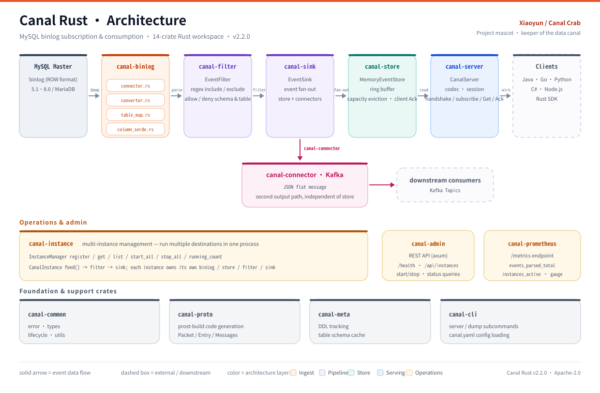
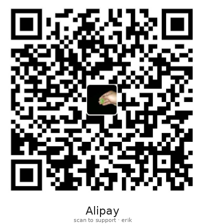

Protocol
0 lines
of client code to change
Reuses upstream Canal .proto; Java / Go / Python / C# / Node.js clients connect unchanged.
CanalProtocol.protoEntryProtocol.protoprost
MySQL binlog · Rust rewrite
Canal Rust emulates a MySQL slave, sends dump requests to the master, parses binlog, and delivers change events to downstream consumers over the Canal protobuf protocol. 14 crates cover the full path: ingest → parse → filter → store → egress → ack.

01 / WHY
No client changes, no protocol changes — just the JVM replaced by a native binary. Canal Rust keeps Java Canal's protocol semantics and splits the path into 14 independently evolving crates.
Protocol
0 lines
Reuses upstream Canal .proto; Java / Go / Python / C# / Node.js clients connect unchanged.
Workspace
14
Six layers decoupled: ingest, processing, egress, orchestration, operations, foundation. Each can be built, tested and replaced independently.
Ingest
Uses mysql_cdc to connect MySQL 5.1–8.0 / MariaDB, with position and GTID modes, mapping TableMap into one event model.
Backpressure
An in-memory ring buffer keeps events and evicts on overflow; client acknowledgements advance the position so consumers are not flooded.

Operate
Run multiple destinations in one process; fan out to TCP clients or Kafka, with Prometheus metrics and an Admin API.

02 / FLOW
From MySQL binlog to downstream consumers, every change is caught, checked, queued and delivered until the client acknowledges it. If a stage slows down, the metrics show it.

canal-binlog connects to MySQL, pulls binlog and converts it to a unified event model.canal-filter applies regex table/schema filters; canal-sink fans events out to multiple exits.canal-store ring buffer, canal-server TCP protocol and canal-connector Kafka delivery.canal-instance manages multiple destinations; each instance owns a complete path.canal-admin control API, canal-prometheus metrics and canal-cli entry point.canal-common types and lifecycle, canal-proto protobuf generation and canal-meta schema cache.03 / MASCOT
The mascot is not a sticker; it is the pipeline turned into a character: someone has to control the flow and deliver the events. Xiaoyun stands on the lock wall and acts out Rust, the ring buffer and fan-out.
Xiaoyun is the lock keeper of this data canal. The rust-red shell maps to Rust; the left claw turns the paddle wheel, deciding how much data passes; the right claw carries a glowing event downstream. A binlog scroll floats upstream, and released packets drift below the lock.
04 / RELEASES
First make the path work, then refactor the foundation, then bring Xiaoyun into the runtime. Every release leaves a record.
Phase one complete: the core path from binlog to client is connected.
phase 1Infrastructure and big refactor: config, errors and lifecycle unified for the fixes that follow.
refactorMascot redraw, connection-blocking fixes and Docker / CI infrastructure.
mascotXiaoyun enters the runtime: canal-rust pet, --help and Admin /pet.svg; 389 tests pass.
GET STARTED
Install protoc, clone, build, edit a canal.yaml and let Xiaoyun take the lock.
# Rust 1.85+ and protoc required
git clone https://github.com/erikwang2013/canal-rust.git
cd canal-rust
cargo build --release
./target/release/canal-rust server --config canal.yaml05 / SUPPORT
The code is Apache-2.0; the mascot and visual assets are separate. If this canal helps your project, a coffee is appreciated. Click a QR code to open and zoom it.

Xiaoyun, the images and the expression forms are non-open-source visual assets. Commercial use requires written permission. The code is Apache-2.0.